Template · the deck system, laid out · open the worked example · template.json
Strategy deck · IMPØSSIBLE
Strategy deck
A 1600 × 900 stage, one type system, one palette with fixed roles, and 29 layouts — every slide a strategy deck needs, used once each.
Everything is composed on a fixed 1600 × 900 stage and scaled to the viewport; when the viewport is wider or taller than 16 : 9 the stage bleeds (--bleed-x, --bleed-y) so full-bleed grounds still fill the screen. Slides pad 58 / 64 / 54 px; covers and section turns pad 70 px on the sides.
swipe ≥ 55px
print each slide at 1600 × 900 (the source deck was exported to a 41-page PDF this way)
Void is the default ground; light, navy, coral and green are grounds a whole slide can take. Coral labels and turns, green resolves, blue is the second plane. Nothing is decorated — each color has a job.
Poppins 900 carries every display line, uppercase, tracked −.04em at .96 leading. Poppins 300 is the voice, 500 the landing. Inter carries body, labels and meta (the source deck used Proxima Nova; Inter substitutes so the template ships with open fonts).
{"cover_h1": 132, "section_h1": 143, "reveal_h1": 118, "statement": 132, "h2": 76, "h2_small": 64, "h2_xsmall": 54, "big_number": 235, "stat": 92, "ledger": 68}
Each card is one layout, shown as it appears in the worked example, with its usage note. Click any card to open that slide in the deck; duplicate the slide, replace the copy, keep the frame.
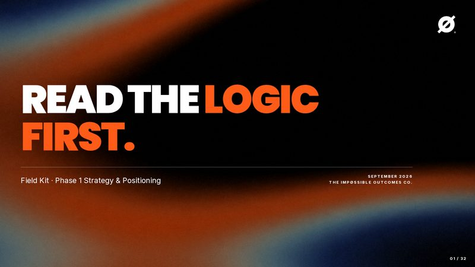
Cover. One h1 at 132 px, three to four words, the last one or two in coral. Title line under the rule, date and studio at right. The field art is the ø co. warm/cool plate; the veil is 42 % black.
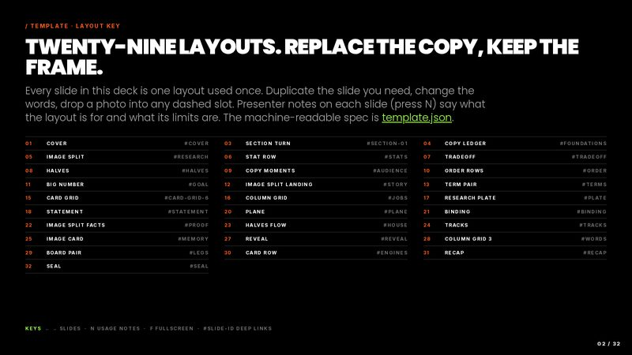
Layout key. Generated from the slide list at load; delete this slide in a real deck. Keeps the deck honest about what it contains.
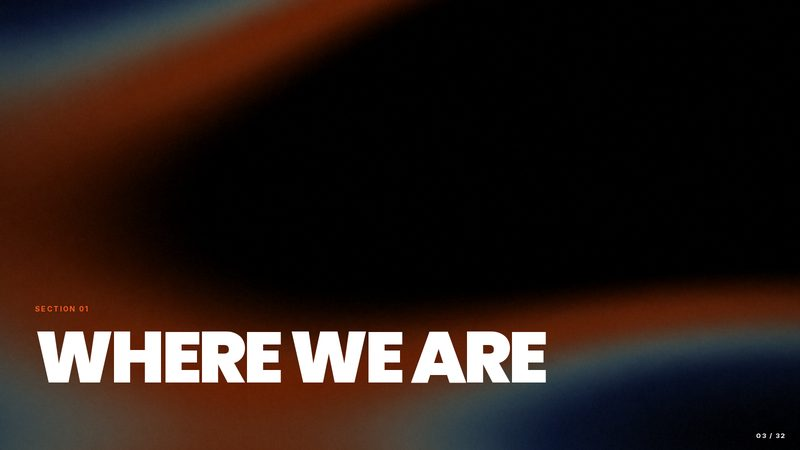
Section turn. Code in coral, one h1 at 143 px, bottom-left. Two to four words. The deep veil (58 %) keeps the type legible on any part of the field.
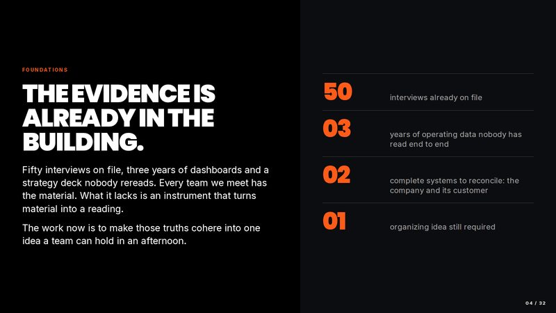
Copy + ledger, 54/46. Left: label, h2 at 72 px, two short paragraphs. Right: three to five rows, two-digit number in coral at 68 px, one line each. Numbers should be real counts, not decoration.
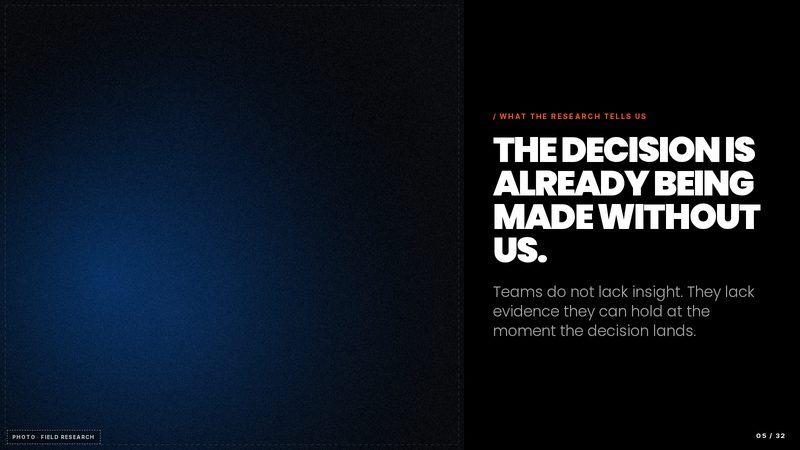
Image split, 58/42, photo left. Label, h2 at 70 px, one voice line (Poppins 300, 30 px). Photo is object-fit cover with a 10 % black wash; put the subject in the center 60 %. Variants of this family: product-split 53/47 (copy left, light), story-split 57/43 (adds a green landing line), aisle-split 62/38, means-split 41/59 (h2 at 91 px).
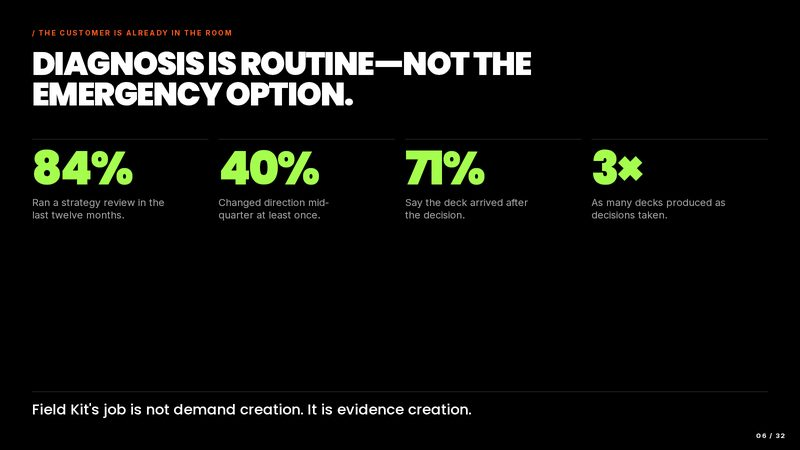
Stat row. Four stats on hairlines, number in green at 92 px, one sentence each (≤ 270 px wide). Landing line pinned to the bottom rule. Use three or four stats; two reads thin, five overflows.
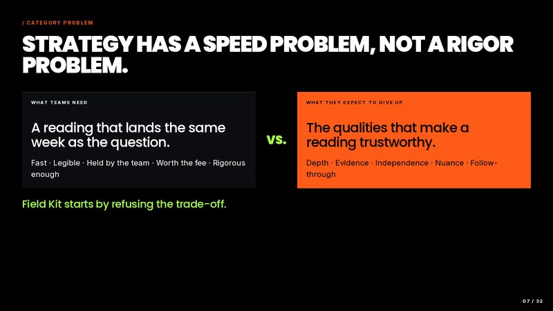
Trade-off. Two panels on hairlines with a green VS between; the right panel is the risk and fills coral. Each panel: a mono heading, one Poppins 500 line at 39 px, a dotted list. Green landing line closes.
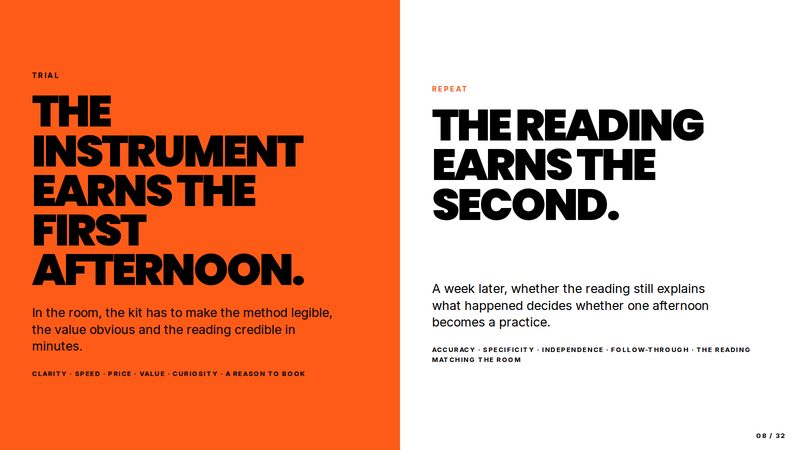
Two halves, coral | white. Each half: label, big statement at 88 px (min-height 320 so the pair aligns), one paragraph, a dotted ingredients line. Keep the two statements the same length. The house layout (slide 21) is the same frame in navy | green.
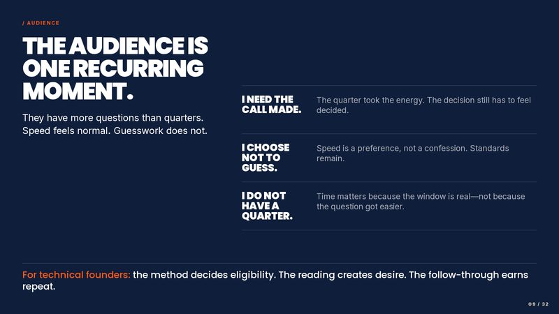
Copy + moments on navy, 41/59. Three moments (a quoted line in Poppins 900 at 29 px, one sentence). The foot line is optional: an accent lead-in and one sentence pinned to the bottom rule.
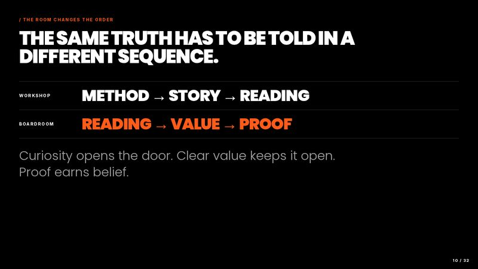
Order rows. Two or three rows: a mono key, then a sequence in Poppins 900 at 53 px with arrows. The row that matters carries class retail (coral). One voice line closes.
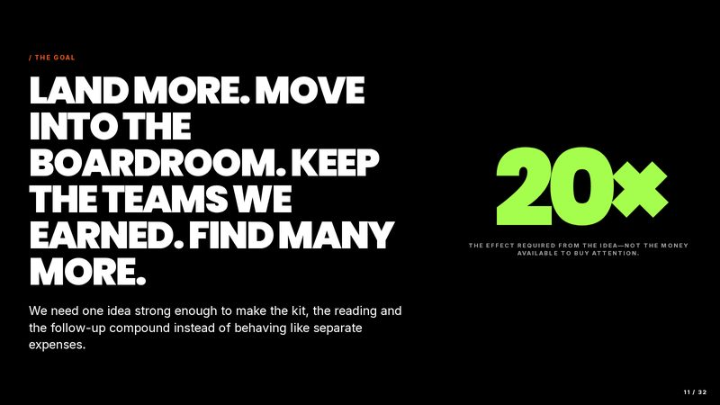
Big number. Copy left (h2 at 84 px, one paragraph), one number in green at 235 px right with a mono caption. The number is the whole slide: two or three characters, no decimals.
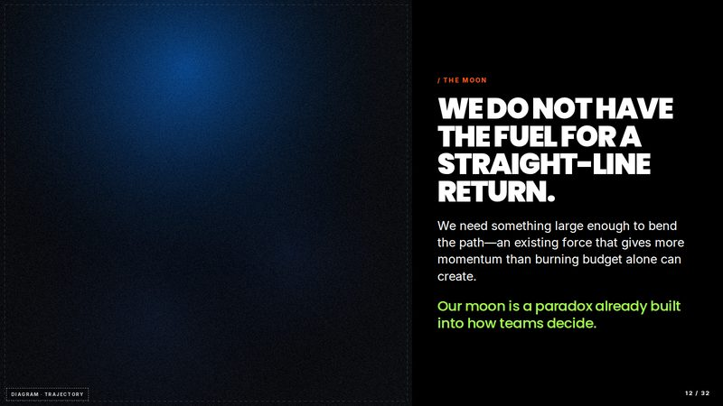
Image split with a landing, 57/43. Same as the image split plus a green landing line under the body. Use it when the slide has to hand off to the next idea.
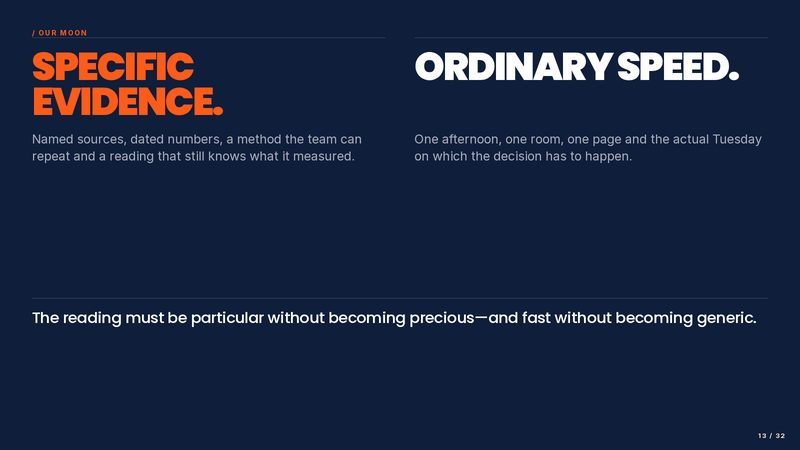
Term pair on navy. Two terms on hairlines: first in coral, second in pale blue, Poppins 900 at 77 px (min-height 140 so they align), one paragraph each. The landing spans both columns.
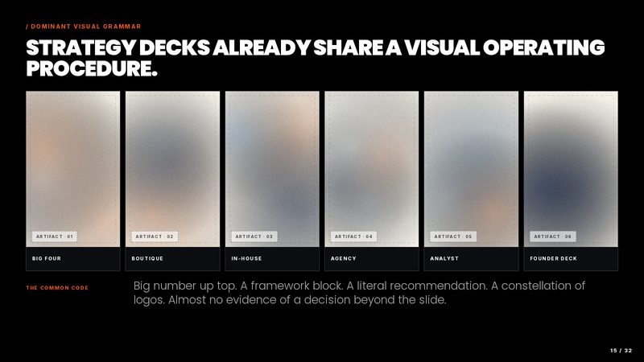
Card grid ×6. Six cards at 448 px, image at 388 px on a paper ground (object-fit contain), a mono name strip. Takeaway below: mono key + one Poppins 300 line. The challenger variant is five cards at 400 px with object-fit cover.
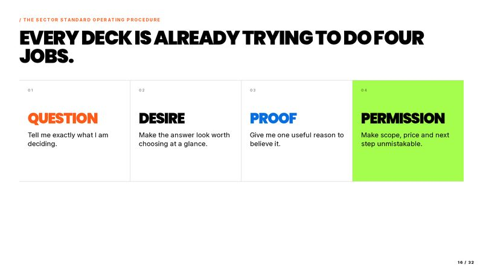
Column grid ×4 on white. Four columns on hairlines: number, one word in Poppins 900 at 48 px (first coral, third blue), one sentence. The last column fills green. The words layout (slide 24) is the three-column version.
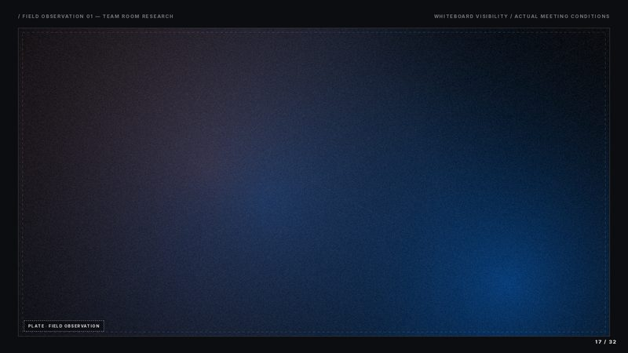
Research plate. One image in a hairline frame at 787 px on the panel ground, two mono captions above. For evidence that should be seen whole: a photo, a screenshot, a source slide.
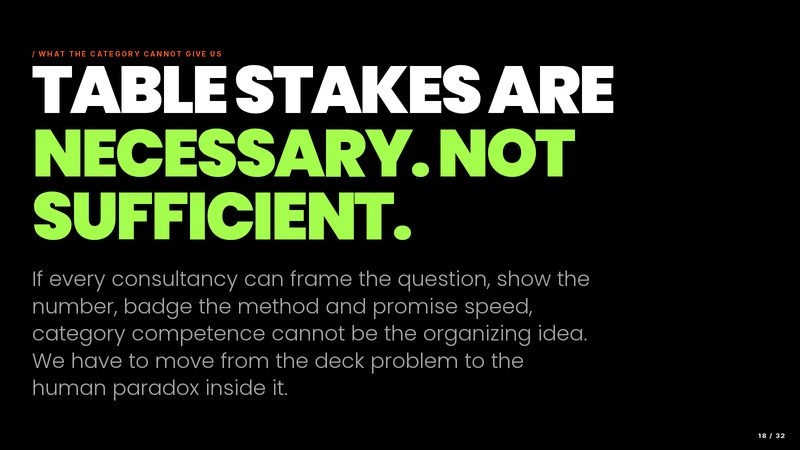
Statement. Display at 132 px with the turn in green on its own line, then a voice paragraph at 42 px. The line-statement variant (h1 at 130 px) and the paradox variant (on the field, h1 at 124 px) are the same move with a different ground.
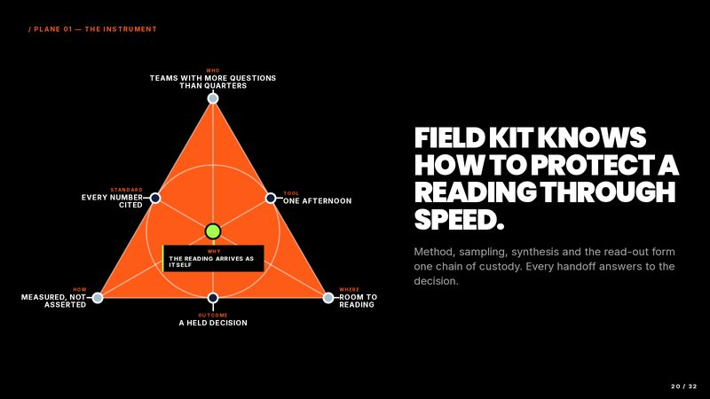
Plane diagram. A Fano plane at 660 × 600: three vertices, three mids, one core, seven labeled points (p1–p7, positions fixed in CSS). Plane fill is the accent (coral; class alt makes it blue and flips the copy to the left with plane-right). Point labels: one mono word in the plane color, then ≤ 6 words.
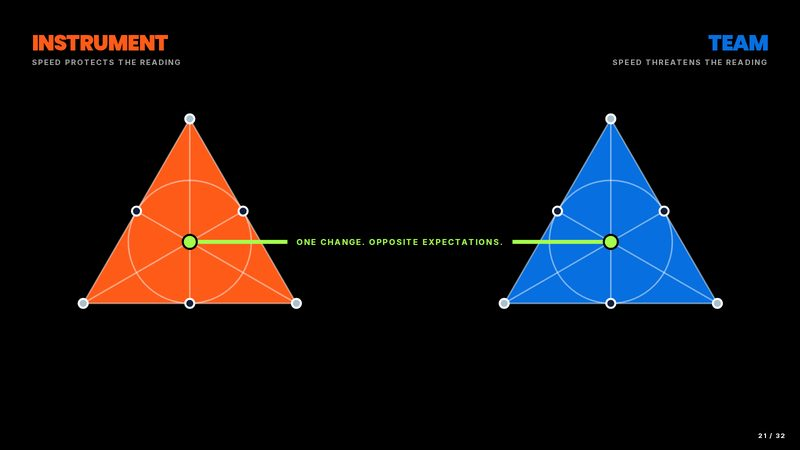
Binding. Two planes (a coral, b blue) at .82 scale joined core-to-core by a green bridge, a label on the bridge, and a heading pair at the top corners (word in the plane color + a mono line). Use after two plane slides.
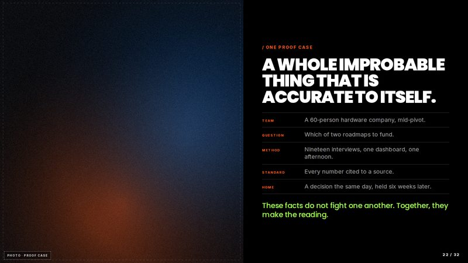
Image split with facts, 52/48. Photo left; right: label, h2 at 58 px, four to six fact rows (mono key in coral, one line), green landing. The pair-split variant puts two photos side by side at 57 % on white.
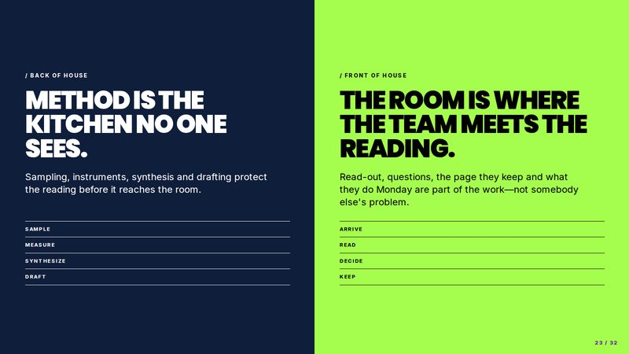
Halves with a flow, navy | green. Each half: label, h2 at 64 px (min-height 185), one paragraph, a four-step flow on hairlines. Keep the two flows the same length.
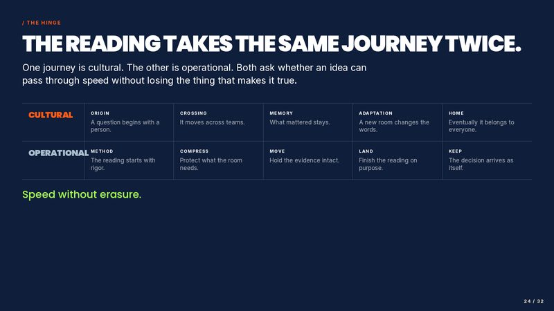
Tracks. Two rows × five steps on hairlines: a track name (coral, then pale blue) and five mono-keyed cells. The point is the parallel: step n on both tracks should rhyme. Green landing closes.
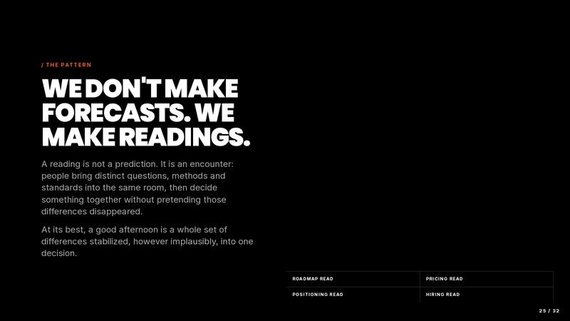
Image + card. Full-bleed photo with a 34 % scrim, a 700 px card at 86 % black (label, h2 at 71 px, two paragraphs), and a 2 × 2 mono strip bottom-right. Photo should carry detail on the right two-thirds.
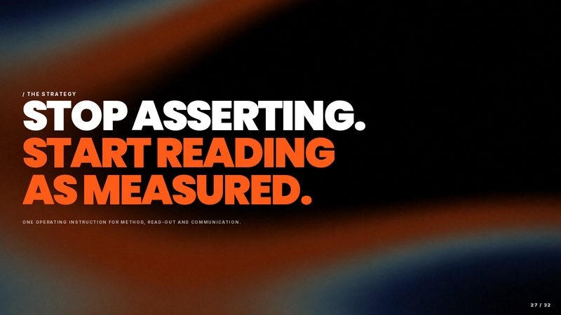
Reveal. On the field: white label, the strategy line at 118 px with the second clause in coral on its own line, one mono line under it. This is the slide the deck exists for; nothing else on it.
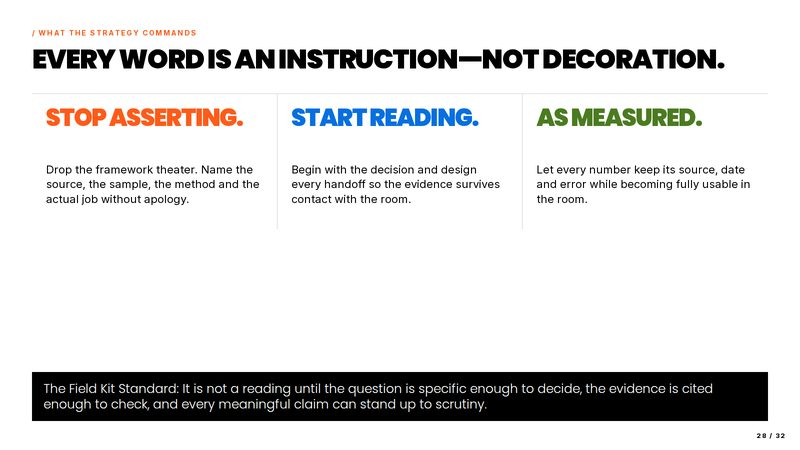
Column grid ×3 on white with a standard. Three words in Poppins 900 at 48 px (coral, blue, green), one paragraph each, and a black quote bar pinned to the bottom rule for the standard the deck commits to.
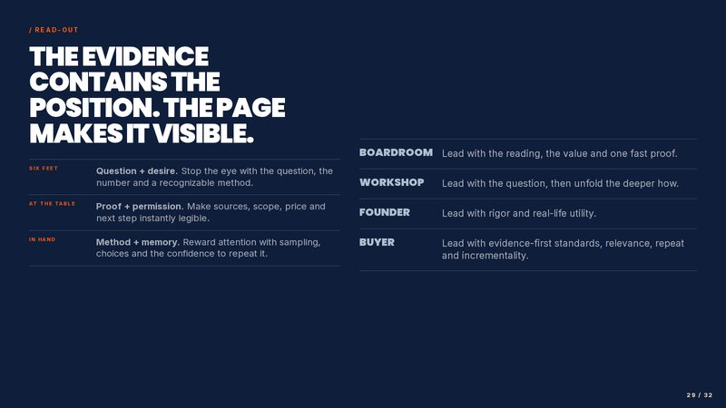
Board pair on navy, 48/52. Left: h2 at 59 px and a distance board (mono key in coral, a bold lead-in, one sentence). Right: a channel board (name in pale blue Poppins 900, one sentence). Three rows left, four right.
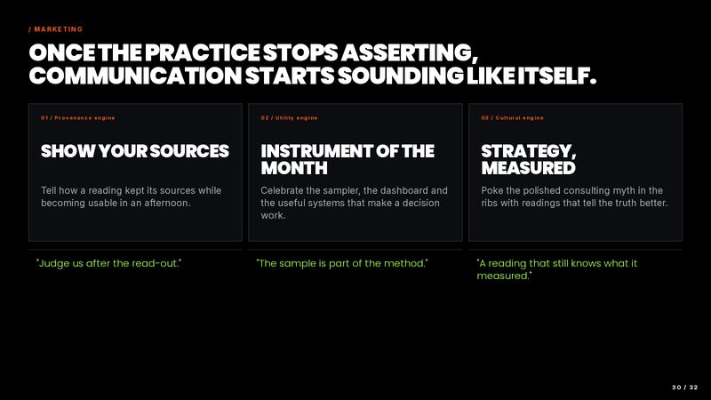
Card row ×3 with voice examples. Three panel cards (mono code in coral, name in Poppins 900 at 40 px, one sentence) and three green voice lines on hairlines beneath. Names should sound like campaigns, not categories.
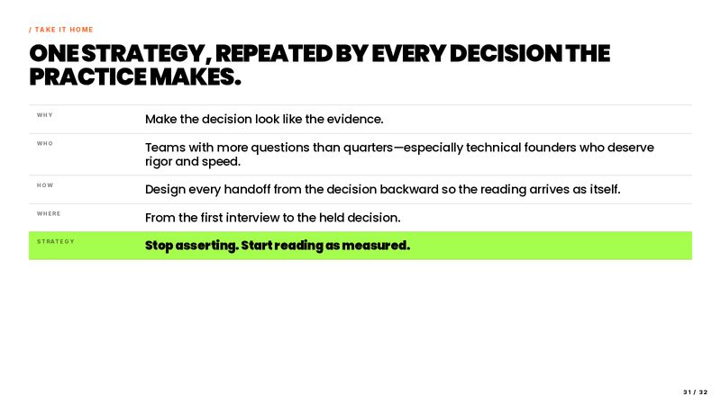
Recap table on white. Key/value rows on hairlines (mono key, Poppins 500 value at 27 px); the last row is the strategy and fills green. Four to six rows.
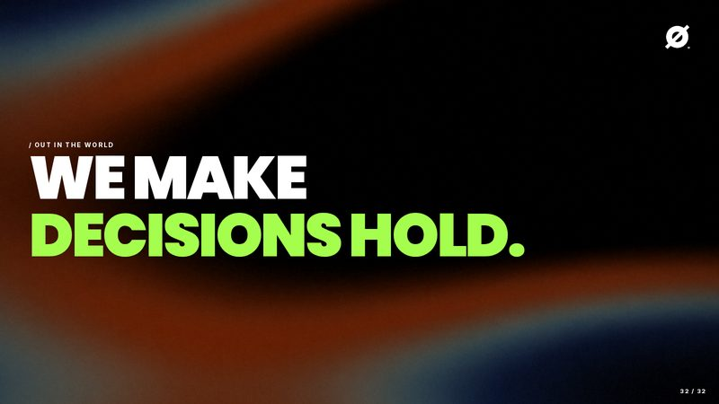
Seal. The outward line at 134 px, second clause in green, the ø mark top-right. The last slide; no notes, no logos beyond the mark.
Families. Several layouts are one frame with a different ratio or ground:
The template ships no photography. Every image position is a slot that draws a seeded field in the palette with a dashed frame and a label, so the layout is judged on the layout. Replace the figure with an image and the layout CSS sizes and crops it.
<figure class="slot" data-slot="Photo · name" data-seed="n" data-tone="dark|light"><canvas></canvas><span class="slot-tag">Photo · name</span></figure> → <figure><img src="…" alt="…"></figure> — the layout CSS already sizes and crops it
anim: opacity 0 → 1, translateY 16px → 0, .68s cubic-bezier(.16,1,.3,1); a2 and a3 stagger by .08 s and .16 s. Reduced motion shows everything at once.
- label: "/ " + a noun phrase, ≤ 6 words
- h2: one sentence, ≤ 12 words, a period
- voice: one sentence at 42px, ≤ 24 words
- landing: one line, green, the close
- lists: dotted " · " runs inside one line, or rows on hairlines
- numbers: two digits, real counts
- one slide, one move